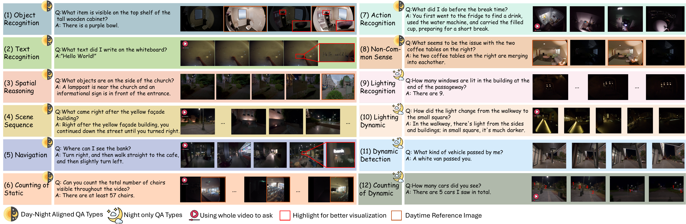
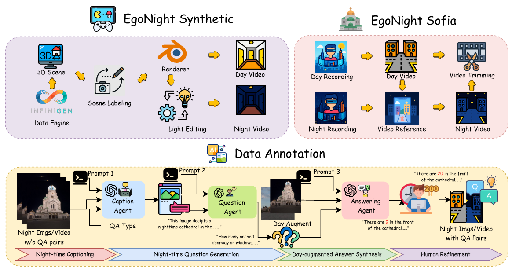
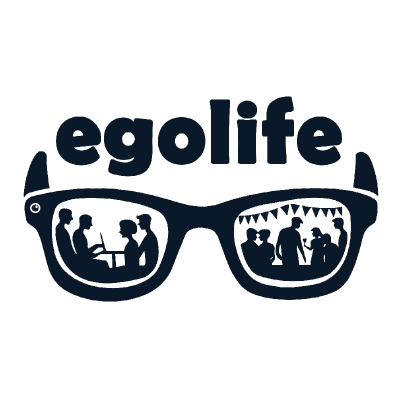
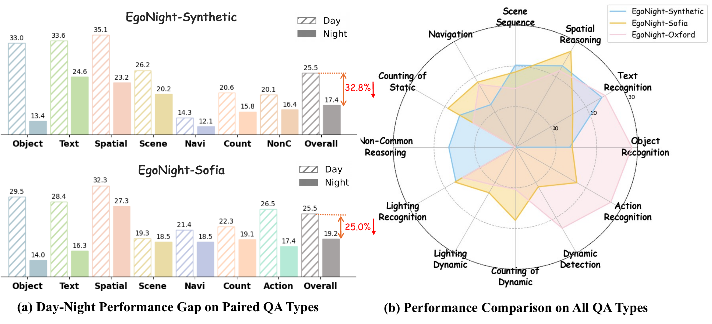
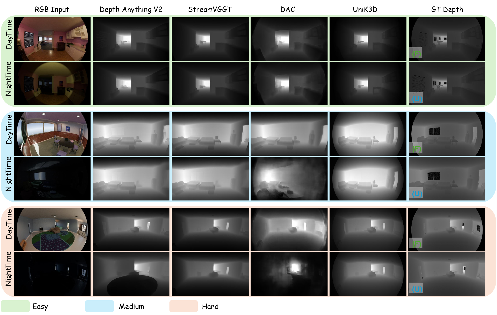

Dataset Design
EgoNight combines aligned synthetic and real-world sources with diverse scenes, illumination types, and easy/medium/hard difficulty levels.
 Synthetic:
Synthetic: 50 aligned pairs
Sofia: 20 aligned pairs
Oxford: 20 night videos

Annotation Pipeline
- Generate nighttime captions with QA-type-specific prompts.
- Create diverse candidate QA pairs from clips and captions.
- Use day-augmented synthesis for paired QA types.
All 3,658 QA pairs are manually verified. Total annotation effort: 300+ hours.

Main VQA Results
Even top MLLMs struggle under nighttime egocentric settings.
| Category | Best model | Avg. Acc (%) |
|---|
| Closed-source |
 GPT-4.1 GPT-4.1 |
30.93 |
| Open-source |
InternVL3-8B |
20.06 |
| Egocentric |
 EgoGPT |
14.29 |
- Day-to-night drop: 32.8% on Synthetic, 25.0% on Sofia.
- New QA types (lighting/navigation/non-common-sense) remain hardest.

Day-night Correspondence Retrieval
- Spatial retrieval (R@1, Night->Day): GPT-4.1 leads on both Synthetic (54.1) and Sofia (84.5).
- Temporal localization (mIoU, Night->Day): feature encoders are more stable than MLLMs.
- GPT-4.1 drops from Day->Day to Night->Day by 21.5 points (Synthetic) and 8.0 points (Sofia).
| Model | Spatial N->D (Syn/Sofia) | Temporal N->D (Syn/Sofia) |
|---|
| GPT-4.1 | 54.1 / 84.5 | 10.0 / 15.5 |
| Percep. Enc. | 41.6 / 80.9 | 32.9 / 33.4 |
| DINOv2 | 28.7 / 74.5 | 33.7 / 33.1 |
| InternVL3-8B | 27.7 / 56.3 | 9.9 / 13.3 |

Depth Estimation at Night
- Best overall: UniK3D (Night AbsRel 0.253, delta1 0.254).
- Fisheye-aware methods outperform generic depth estimators.
- A clear day-night gap persists across all methods.
| Method | AbsRel D/N | delta1 D/N |
|---|
| Depth Anything | 0.297 / 0.302 | 0.249 / 0.237 |
| VGGTStream | 0.293 / 0.298 | 0.234 / 0.232 |
| DAC | 0.245 / 0.292 | 0.255 / 0.216 |
| UniK3D | 0.224 / 0.253 | 0.280 / 0.254 |
